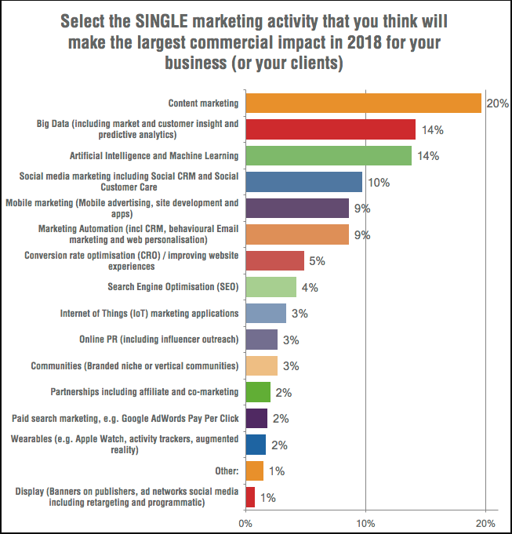

¿Qué tendencia de marketing será más importante para usted y su negocio en 2018?
Publicado por David Ochoa. Tomado de Smart Insights
Al solicitar una sola técnica de muchos, esto ayuda a mostrar las mejores 3, 5 o 10 tendencias de alto nivel. Hay tres principales técnicas claras, cada una de más del 10%, pero con una larga cola de muchas otras técnicas que muestran el potencial para optimizar diferentes áreas de marketing digital. Echemos un vistazo a los tres primeros ...
No es de sorprender que el marketing de contenidos sea el 'top of the pile', ya que este ha estado entre los tres primeros para cada uno de los años en los que hemos realizado esta encuesta. Consideramos que el marketing de contenidos es el combustible de "participación" que impulsa todas las comunicaciones digitales, desde la búsqueda hasta el marketing social y por correo electrónico, para crear experiencias de sitios web que se conviertan. Nuestro kit de herramientas de marketing de contenidos es popular, ya que los miembros quieren aprender un enfoque más planificado para mapear el contenido contra personas en todo el recorrido del cliente.
Más sorprendente es que Big Data está en segunda posición. Creo que esto se debe a que los especialistas en marketing son conscientes del potencial de usar datos como lo que llamamos "información procesable". Para ayudar a decidir qué técnica elegir, ampliamos las etiquetas cortas que se ven en algunas encuestas para ayudar a determinar la respuesta con más cuidado. 'Big Data' es un término nebuloso, pero cuando ampliamos la definición para incluir el análisis profundo y predictivo, muestra el valor de las técnicas de marketing específicas para Big Data y esta ayuda explica por qué está en la posición número dos.
En tercer lugar está la Inteligencia Artificial y el Aprendizaje Automático. ¡Hemos agregado esto a la encuesta este año con el interés en él y está 'directamente en el número tres'! Es bueno ver el interés en estas técnicas que hemos estado cubriendo mucho en el blog y en nuestros recursos para miembros este año. En la tendencia 8 mostramos cómo se pueden mapear las diferentes técnicas de inteligencia artificial con respecto al ciclo de vida del cliente.